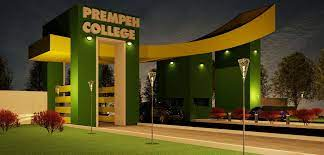
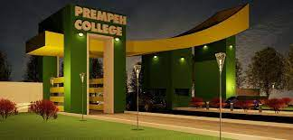

About Me
Welcome to my "About Me" page, where you can get to know the person behind the projects and professional endeavours. My journey as a Project Manager and Software Developer has been marked by a deep passion for technology, coupled with a fervor for a healthy and active lifestyle.
What I'm really good at:
Project Manager

Full Stack Developer
My background
 

I hold a strong foundation in compuer science from the renowned University of Ghana, Legon. Currently, I'm furthering my studies in software development at BYU-Idaho Online, where I'm constantly exanding my skills and knowledge. I'm also an old student of Prempeh college, where I got my high school diploma.
Interest and Lifestyle:

Beyond the world of software and project management, I'm an avide basketball enthusiast and dedicated gym-goer. I find giong to the gym and playing basketball exhilarating, and they proide a space for personal growth and fitness. They also fuel my commitment to excellence both in professional and physical spaces.
Leadership and Organizational skills:
My professional journey has equipped me with excellent leadership and organizational skills. These qualities enable me to guid teams towards a shared vision, set clear objectives, and maintain a high level of organization throughout the project lifecycle.